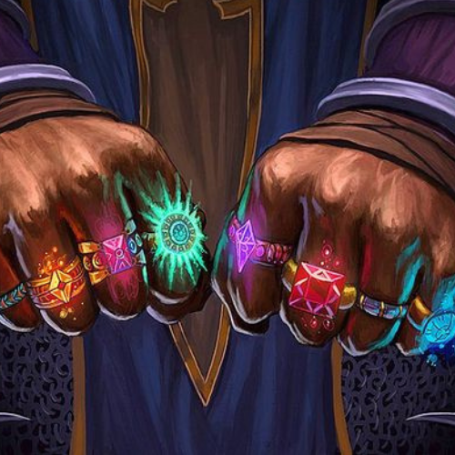

Voltar

Levi, O Fauno Bardo
Levi, é um fauno bardo, orfão por conta da Grande Guerra Leviana,
ele cresceu sob a tutela de um taberneiro na pequena cidade de Entrerio.
Com talento natural para a magia e uma forte ligação com a natureza,
ele busca conhecer melhor sua história atraves de suas melodias e encantos.
Identidade
Nome: Levi
Idade: 22 Anos
Altura: 1.65 m
Gênero: Masculino
Classe: Bardo
Raça: Fauno
Pontos de personagem
Vida: 54 HP
Level: 3
Experiêcia: 110 / 375
Sanidade: 60%
Personalidade
Bom-Neutro (Justo)
Motivações: Colar Misterioso, tocar sua Musica e o seu passado.
Inspirações: Velho Taberneiro.
Defeitos: Humor duvidoso e Festejador.
Ojetivo: Descobrir mais sobre o passado de sua familia e tornar-se um bardo muito famoso.
Exemplos:
Modificador: [-X], [+X]
Bonus Raça: (X)
• FORÇA: 6 [-2]
• CONTITUIÇÃO: 6 [-2]
• DESTREZA: 10 [0]
• AGILIDADE: 7 (1) [-2]
• INTELIGÊNCIA: 16 (2) [+3]
• CARISMA: 18 (+4)
• Herança Genética
{Passiva} (Raça)

Esta raça foi reconhecida pela sua astuta habilidade em manipular encantamentos, principalmente
envolvendo o fator cura.
Bônus de +2 em qualquer item encantado que esteja portando.
⁕ +3 se for de cura.
⁕ Em uma floresta esse bônus é dobrado.
• Benção do Poeta Lvl 2
{Passiva}
A música tocada pelo fauno cativa o coração dos aliados e adiciona o efeito
Benção
.
Some +4 ao resultado final da rolagem nas curas a si mesmo e aos aliados que a ouvirem.
• Marasmo Lvl 1
◂ Magia de Ilusão ▸
1 Carga p/ batalha
O majestoso som da flauta samponã pode deixar até 2 inimigos atordoados por 1 turno.
• Inimizade Lvl 1
◂ Magia de Ilusão ▸
2 Cargas p/ dia
Faz com que 2 inimigos briguem entre sí.
Caso tire um critico um dos inimigos torna-se um NPC Aliado.
• Ventos Revigorantes Lvl 1
◂ Magia de Cura ▸
2 Cargas p/ batalha
Cura 1 aliado rolando 1d6.
Caso tire 6 natural, o valor da cura é dobrado.
Sobe o morro do perigo, não é mais do que ninguém,
vai subir com vinte e cinco
e vai descer com mais de cem.
Historia
Nasci na ilha de
Pondor do Aramate
, localizada no Mar Leviano, onde era o lar de diversas raças que viviam em plena paz e
harmonia com a natureza.
Uma delas eram os Faunos, conhecidos pelas suas pernas e chifres de bode.
Os Faunos passavam maior parte do seu dia fazendo cantigas, escrevendo contos, manipulando a magia de forma
harmônica e desde pequenos eram incentivados a tocar instrumentos.
Toda essa felicidade foi perdida... 22 anos atrás os Orcs invadiram e tomaram a ilha para si.
Assassinaram quase todos os habitantes e escravizaram os que sobraram.
Numa tentativa desesperada de salvar a espécie, os Faunos colocaram algumas crianças em canoas e as lançaram
no
Mar Leviano
em direção a costa de Mitrael na esperança de serem encontradas por alguém, uma delas era eu.
A maioria das canoas se perderam no caminho ou afundaram... foram poucos os que chegaram em algum lugar.
Minha canoa apareceu de manhã cedo numa praia de Entrerrio. Comigo eu carregava apenas 2 coisas, um colar encantadamente misterioso no pescoço e uma flauta Samponã.
Obviamente eu não me lembro de nada disso, pois eu era um recém-nascido.
Quem sempre contou essa história era o velho que o resgatou. Ele era um ex soldado da corte e com o dinheiro da aposentadoria montou uma taverna que sempre foi seu sonho.
Esse velho alcoólatra me nomeou como "Levi" e me criou junto de seu filho biológico. O velho já era viúvo a alguns anos... nossa pequena família de três integrantes até que se virava bem.
Nos dividíamos um pequeno quarto nos fundos da taverna, era apertado, mas gostávamos de morar ali. Durante o dia o velho sempre nos ensinava alguma técnica de combate ou manuseio de espadas.
A noite, trabalhávamos na taverna, limpando vomito dos bêbados, atendendo as mesas, separando brigas... mas o que eu mais gostava era de assistir os artistas que ali se apresentavam.
Algo dentro de mim me dizia que era isso que eu deveria ser.
Eu sempre adquiria algum conhecimento artístico e musical dessas pessoas, com o tempo dominei a maioria dos instrumentos.
A flauta samponã foi a que mais me aperfeiçoei e desenvolvi minha magia a partir dela.
Quanto mais me ligava a música e a arte... mais a curiosidade sobre meu passado desconhecido crescia dentro de mim. Assim passei minha infância e adolescência.
Pouco após eu completar 17 anos, o velho foi assassinado brutalmente por um grupo de ladrões.
O filho biológico herdou a taverna e eu fiquei desolado com o ocorrido, decidi largar tudo e seguir minha voz interior, meu sentimento em relação à arte nunca mudou... eu tinha certeza de que isso era o certo a se fazer!
Juntei meus poucos pertences, me despedi de meu "irmão" e segui meu rumo sem destino.
A partir daquele dia me apresento em todas as tavernas que encontro em meu caminho, esse é meu ganha pão.
Tento usar minha magia só para o bem, por mais que a situação aperte de vez em quanto eu tenho que fazer coisas que não me orgulho muito.
Minha curiosidade pelo meu passado só cresce com o passar dos anos e a saudade daquele velho e do seu filho que me tratavam como família e enorme.
Já faz 5 anos que vago sozinho pelo mundo.
Escrevo minhas aventuras em meu caderno de bolso e as guardo com muito carinho.
Espero um dia poder contar essas histórias para muita gente!
Se navegar chegou, deixa navegar,
chegou deixa chegar.